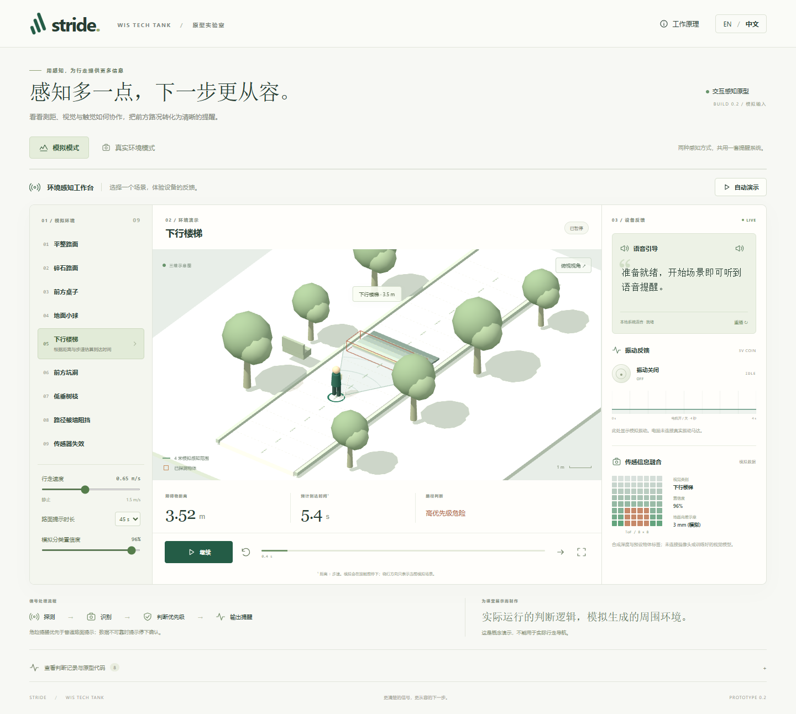

跳到校园作品
c
_
ChefZC
.
Personal
Profile
Gallery
↗
游戏
近况
随笔
用量
PERSONAL SPACE
/
001
中
EN
[ GALLERY / THE SCHOOL COLLECTION ]
CHEFZC · WIS · 2026
SCHOOL LAB
.
s.
让课堂里的一个想法，慢慢长出自己的样子。
这里收录为学校制作的实验与展示。与主展厅分开陈列，保留每一次探索自己的颜色。
主展厅
01 / 04
校园实验室
02 / 01
建模作品
03 / 02
请启用 JavaScript 查看互动展柜。
打开 STRIDE / Open STRIDE
GitHub
↗
Instagram
↗
邮箱
↗
×
STRIDE · 真实模拟界面
